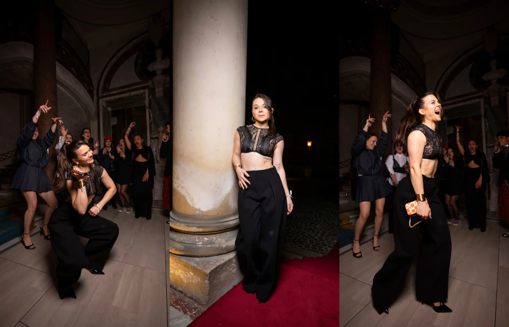
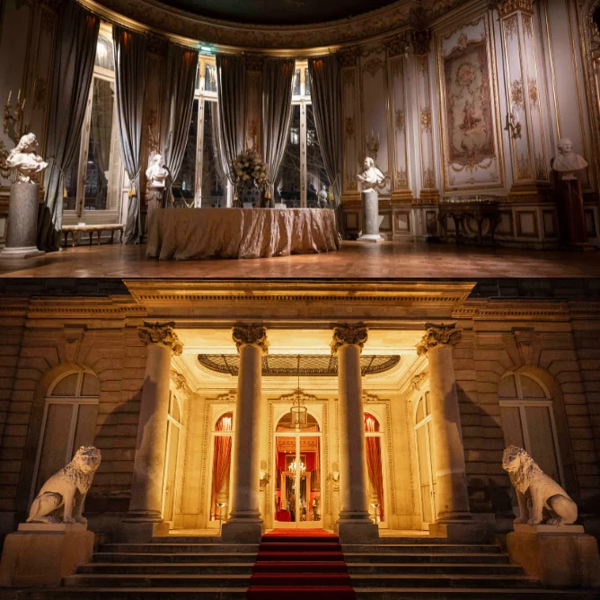

Évènements
Anniversaire de Jujufitcats

Le projet
Organisation d’une soirée pour fêter les 30 ans de Jujufitcats.
01 •
Le contexte
A l’occasion de ses 30 ans, Jujufitcats nous confie l’organisation de sa soirée d’anniversaire avec sa famille et ses amis. L’idée est de créer une fête sur le thème « Fashion Week » afin de réunir Juju et ses proches pour cette date importante. Du lieu au traiteur, en passant par le DJ et la tenue de Juju, nous nous occupons de tout.

02 •
Notre proposition
Création d’un événement exclusif sur le thème « Fashion Week », offrant à Jujufitcats et ses invités une expérience immersive dans l’univers de la mode.
Un lieu d’exception : privatisation du musée Jacquemart-André pour une soirée élégante et prestigieuse.
Une mise en scène mode : tapis rouge à l’entrée et une scénographie inspirée des plus grands défilés.
Un look sur-mesure pour Juju : expérience shopping avec la styliste Bérénice Barbe aux Galeries Lafayette, avec une tenue signée LIVY Studio et Jacquemus.
Une ambiance musicale unique : DJ sets exclusifs par Juste Romain et DJ Timac.
Des souvenirs capturés par un pro : Shooting photo XXL signé Pierre Perusseau.
Des invitations personnalisées : création de cartons d’invitation sur-mesure pour une touche exclusive.
Une gestion de A à Z : concept global, sélection des prestataires, scénographie, coordination et production pour offrir une soirée inoubliable à Juju et ses proches.

Les résultats.
Un storytelling mode et prestige parfaitement incarné, un timing respecté, un lieu d’exception sublimé, une ambiance inoubliable et surtout une satisfaction unanime !

Le projet suivant